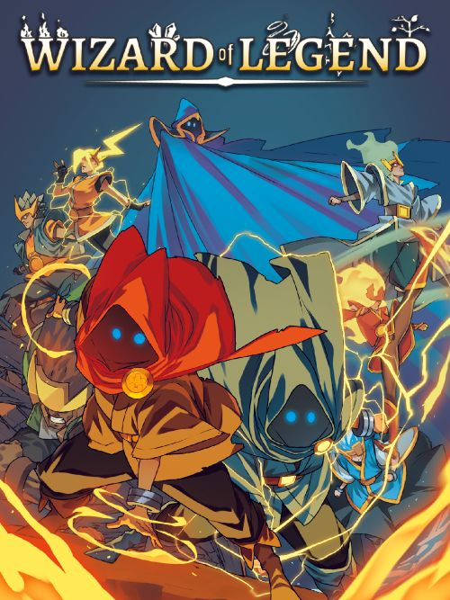

Wizard of Legend v1.23.4a
Género:Roguelike
Wizard of Legend es un videojuego de mazmorras vertiginoso que pone el
énfasis en el combate mágico dinámico. El uso de hechizos en combinación
con una increíble velocidad de movimiento te permitirán concatenar conjuros
y así desatar combinaciones devastadoras contra tus enemigos.